From July 1976 Byte Magazine (Permission Requested)
OCRed from http://retro.co.za/byte
James R. Jones has a web page and e-mail address
here.
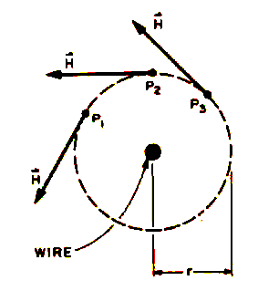 Figure l: For a wire carrying current i directed our of the page, the magnetic field H is proportional to i/r. The direction of H is tangential to the circle of radius r, as shown for points P1, P2 and P3. Coincident Current
Ferrite Core Memories
James R Jones
111 E Jefferson
Colorado Spring CO 80807Have you ever looked through the surplus catalogs arid wondered whether those memory core planes and stacks advertised could be used for anything other than tea strainers? How are they supposed to work, and what kind of circuitry is required? Could you troubleshoot and repair that surplus core memory and drive electronics? What good is a core stack without data? Is it a worthwhile project to build a memory system around a core stack?
Some of these questions ran be answered directly in what follows. Others can be answered at least partially in terms of my own experience: getting one surplus core stack to work as the main memory of my home brew computer by building the necessary electronics without the benefit of manufacturer's data.
Perhaps the biggest advantage of the core memory over other types of random access memories is its ability to retain stored data when power is removed, and to have it readily available when power is restored. This feature is sometimes used by minicomputer manufacturers to ship their products with preloaded systems software. Also, for some forms of core memory, the storage capacity increases much faster than the amount of driving electronics. In order to understand the functional requirements and the operating restrictions placed on core memory driving circuitry, it is necessary to take a close look at how cores work, and how they are typically organized to form large capacity stacks.
Magnetic Fields and Hysteresis
The memory storage element is the ferrite core itself. Its function is to accept, store, and read out a bit of information. It can do this by virtue of its ferromagnetic properties. These allow it to be easily, but strongly, magnetized in a preferred direction by an externally applied magnetic field to signify a 1 bit value, to be easily magnetized in another direction to signify a 0 bit value, and to retain its magnetic direction when the external field is removed.Physically the core is a small doughnut shaped object made of pressed, heat treated, nonconductive, iron oxide powder. A typical dimension Is 0.02 to 0.2 inches in diameter (0.5 to 5 mm). The external magnetic fields are applied to the core by means of wires passing through it carrying controlled amounts of current.
A straight wire carrying a current gives rise to a vector field, H, in the surrounding space, called the magnetic field strength. H is proportional to the current i, and is a vector directed as shown in figure 1. The arrows indicate the directions the north end of a compass needle would point if placed at the points shown. Another vector quantity, the magnetic field of induction, B, is also considered to exist, and describes the overall magnetic effects due to H and the presence of matter. In figure 1, B behaves like H. If the wire passes through a ferrite core, the H field generated by the wire causes molecular and microscopic sized magnetic domains (regions magnetized like the compass needle) in the core to align themselves in the direction of H, resulting in a B field In the core with direction around the circumference of the core as shown in figure 2. This field is much stronger than that due to the wire alone, because the structures in the core add their fields to the wire field when aligned.
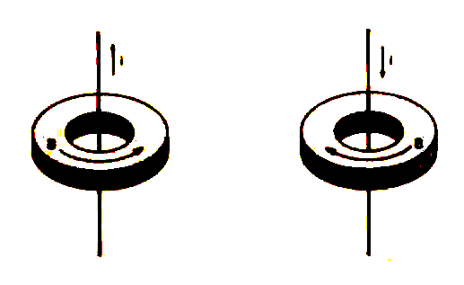 Figure 2: The direction of magnetic induction B in the core results from alignment of c structures with the magnetic field due to current i.
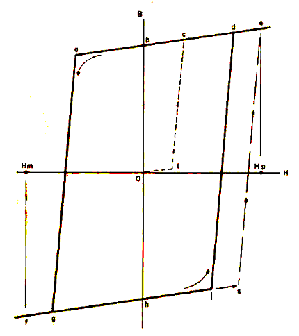 Figure 3: Memory properties are derived from the hysteresis properties of the core material. When the applied H value is 0, the residual B value in the core material will depend upon the past history o! magnetization. This figure and subsequent figures show the magnitude of the vector quantities H and B, with positive and negative solves corresponding to the two directions of rotation about the core axis. Because of the geometry of the cores with respect to the wire, it is possible for us to drop the vector notation and simply refer to the magnitude of B and H in the discussion which follows. The exact way the strength of Bin the core depends on the strength of applied field H (proportional to current I) is represented graphically in the scalar B versus H curve of figure 3.
After manufacture, the core has no magnetization, and B = 0. If applied field H is increased from 0 to Hp, B increases along path 0-1-c-e. If H decreases to 0, B decreases from e to b, leaving the core magnetized with no applied field present. Decreasing H from 0 to Hm causes B to move along b-a-g-f, changing direction as a passes through 0. As H increases to 0, B moves to h, again leaving the core magnetized with no applied field, but in a direction opposite that above. As H increases again from 0 to Hp. B moves along h-j-d-e.. If H is again varied as described above, B will trace the same counter clockwise path.
This effect of tracing two alternate paths between two flied states, instead of tracing a single path, is called hysteresis, In the core, this is due to the alignment of the magnetic domains, a process which requires a minimum applied field to force alignment in a given direction. When the applied field is removed, the aligned structures provide the core with its own field. Path segments a to g and j to d, where this effect occurs, are termed irreversible. Reversible magnetic effects also occur in the core. For example, if B is at position h, H can be varied to move B back and forth along line f-j as many times as desired as long as B is not increased past point j. Variations along line a-e are also reversible to point a. This effect is due to elastic deformation of the microscopic structures and alignment of molecular structures, both of which return to normal when the applied field is removed. Both effects are important: Hysteresis is the memory property; reversibility, although the largest noise contributor in the core, allows the core to act as an AND gate, a key principle in selection of individual bits.
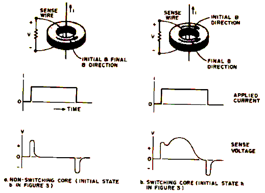 Figure 4: Sense voltages perceived on a wire .strung though the core depend upon the previous B magnetization state in the core as a current pulse is passed through the wire. A non-switching core produces a simple transient due to reversible B field changes induced in the core by the current edges as at (a). When the core switches as at (b), an extra transient pulse is induced in the sense wire. Sensing Core Magnetism Changes
Changes in the core B field are sensed by means of a second wire passed through the core. The voltage difference appearing at the ends of the sense wire is proportional to the change in B, and inversely proportional to the time required for the change. So that an irreversible change can produce a large signal.H is made to change as fast as possible, However, this causes the reversible changes to produce large signals also; but the speed tends to separate the signals: Deformation effects can occur much more rapidly than gross microscopic realignments, e.g.: for a fast increase of H from 0 to Hp in figure 3, B would not follow h-i-d-e, but rather h-j-s-e, so most reversible changes occur first. Figure 4 illustrates the voltages appearing across the seine wire for a core in initial state b, and in initial state h, resulting from a fast rising current pulse generating field Hp.
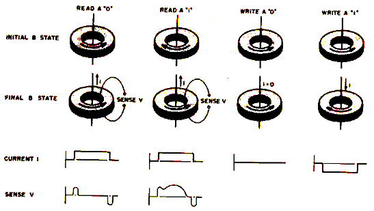 Figure 5: Using the physics of core switching. This figure shows the four basic operations needed to manipulate the binary state of a core: Read a "0", read a "1", write a "0", write a "1". Using the Core to Remember
If we now interpret the initial direction of a in the cores to represent a stored 0 (figure 4a) or a stored 1 (figure 4b), and read the core contents by the method of figure 4, then read and write operations can be performed a indicated in figure 5. Two things should be noted: First, a stored 1 is destroyed In the process of reading it because the core is reset to the 0 state. If it is necessary to retain the 1 in memory for later use, a special refresh write operation is required to restore the 1. Second, the cases of writing into a core already containing a 1 is not shown, because the memory control logic is usually designed such that a destructive read cycle always occurs before the write cycle, for a given core.Memories Larger Than One Bit
Using the method of figure 5 can be an expensive undertaking if one wants to store 4096 bits, for instance. Although the sense line can be made to pass through all the cores to detect switching of a selected care, circuitry must be built which can select any one of 4096 cores and supply the proper read or write current to it alone. To reduce the amount of selection circuitry required for large memories, the cores' reversibility property is used to assist in the selection process, This is done by passing two independently controlled current lines instead of just one through a given core; each line can pass half the current of the original line. Due to the shape of the B versus H curve, if only one line passes half the required switching current required, B remains in the reversible region and returns to the original state (figure 6a) when the current is removed. If both lines pass current, core switching occurs if the core is in the proper original state (figure 6b and c).
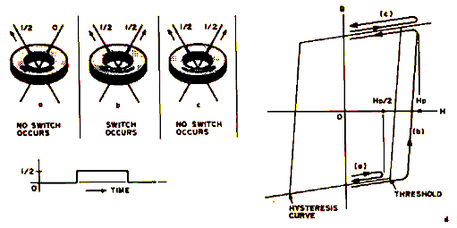 Figure 6: How hysteresis makes coincident current bit selection possible. The principle involved is simple: A current of i is sufficient to generate an H field strength which will drive the core from one store to the opposite state, but a current of i/2 is insufficient to cause the core to cross the threshold of the hysteresis curve. The H field of two separate wires add,. that if two wires carry currents of i/2 in the same direction, the result is the some as a single wire carrying a current of i. The hysteresis curve at the right (d) shows the paths taken by the B field in the case of a single i/2 current (a), additive i/2 currents forcing a change (b), and additive. i/2 currents causing to change since the core is already in a state aligned with the H field (c). Coincidence Current Selection
Thus by the means of coincident currents, the core acts as an AND gate; both currents need to be present simultaneously to choose the core and allow it to switch if it is in the proper state. A multiple bit memory can now be constructed as shown in figure 7. If currents are applied to lines X2 and Y3, the core at (2,3) is selected. Other cores on the lines X2 and Y3 are half selected. Only one pair of lines is allowed to carry current at any one time. To read the core contents at (2,3), current is passed as indicated. To now write a 1, the current is reversed; to write a 0, no current is applied.Property and Operation Restrictions
Arrangement of cores in the coincidence current mode imposes so rather severe requirements on core fabrication and memory operating conditions. For a core in B state x in figure 8, the half select current must generate a field less than Hk to prevent B from passing the "knee" of the curve. But the tool select current must generate a field greater than Hs to ensure full switching of the core. Thus the half select current can only produce fields in the range shown by the heavy line. As the quantity (Hs - Hk) gets smaller, the operating range gets larger. So the cores are made with (Hs - Hk) as small as possible, but even if it were zero, the half select current would have; maximum tolerance of 33% of its midrange value. The operating range is further restricted by two more factors. First, manufacturing and assembly tolerances allow memories to be constructed of cores with slightly differing B versus H curves, effectively increasing the difference (Hs - Hk) as all cores are considered. Second, as the memory is operated, the cores heat up due to switching losses, select line heat, and heat from nearby electronics, causing the entire B versus H curve to shrink towards the origin. Newer core memories me made using ferrite with low temperature sensitivity; but this is not true of older memories, and such measures as constant temperature ovens, forced air cooling, and power supply temperature compensation have been used to ensure reliable operation. ,Reading and Writing Words: The 3D Memory
The coincidence current scheme certainly cuts down the required selection circuitry, although at the expense of operating tolerances. The 20 cores of figure 7 are selected by nine lines, and the 4096 bit memory mentioned earlier, if arranged in a 64 X 64 array, has only 128 select lines. Further economy is realized if the idea is expanded to word organized memories. For example, consider the 16 bit array of figure 9 which has an added winding - the inhibit line (the arrows on the select lines indicate the read current directions). If a 16 word memory of 3 bits per word is desired, three of these bit planes are interconnected as shown in figure 10.Sending half select currents through X1 and Y1 select lines in the arrow directions will cause the core at (1 ,1) in each array to read out via the associated array sense line. Reversing the select current directions will
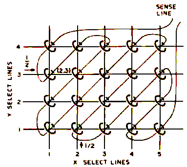 Figure 7: The concept of a coincident current selection is implemented using an array of cores with X and Y lines. in this example, a total of 20 cores is wired with a single sense wire, 4 Y selection wires and 5 X selection wires. When i/2 (see figure 6) is flowing through one X and one Y line, the matrix intersection point is addressed. In this example, the care et (2,3) will either be read or written. Actual core arrays are much larger than this simple conceptual illustration.
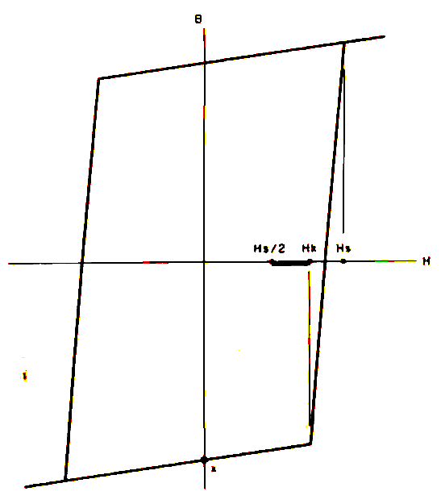 Figure 8: The half-select current i/2 must generate an H field less than Hk if a change of state is to be avoided. Similarly, the full select current of i must generate an H field strength greater than Hs to ensure switching. This leaves a range of field strengths (and corresponding current values) from Hs/2 to Hk which introduces a critical tolerance for the select currents in a core memory design.
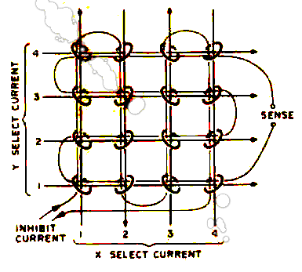 Figure 9: The inhibit line is added to the array assembly of cores so that it possible to avoid changing the state of a given core with coincident current selection.
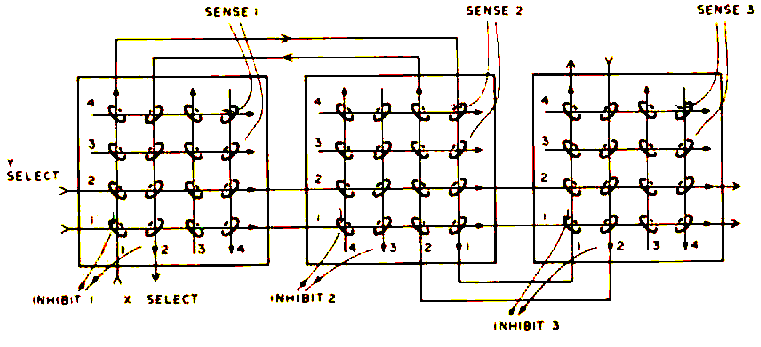
Figure 10: 3D Plane Interconnections. In a 3D memory, three dimensions of addressing are implicit: There is on X and Y dimension for each plane, and one plane is used for each bit of the parallel computer word. In this picture, three planes of a 3 bit wide memory are shown. Only two lines are shown connected in each X and Y direction. Other X and Y lines are connected between planes in a similar fashion.cause a 1 to be written in each (1,1) position. In order to write a 0 in some of the (1,1) positions, a half select current is also applied to the desired inhibit lines in the direction of the arrows at the time 1's are to he written. This inhibit current appears as read half select current at all cores of the dated array, canceling half the write select current at the selected core, and thus preventing the writing of a 1 at that core.For a 4 K word memory of 16 bit words, the assembly (called a stack since the arrays are often stacked like pancakes for simple interconnection along the edges) would have 128 select lines, 16 sense lines, and 16 inhibit lines. The connection scheme is termed 3D, 3D, and is most economical in terms of support circuitry.
Other Arrangements
Bit oriented memories of the form of figure 7 are called 2D memories. Another commonly used word oriented connection scheme, 2-1/2D, will not be discussed because of the relatively large amount of select circuitry used. Interested readers are referred to the bibliography at the end of this article. A variation of the 3D memory replaces the inhibit and sense lines by a single line which performs both functions, since they occur at separate times. At the cost of additional circuit complexity, the variation allows small. cores and more closely packed arrays to be used.Minimizing the Noise
A core can be oriented two ways at a select line intersection, and sense and inhibit lines string the cores of a plane in many patterns. Advantage is taken of these facts to minimize noise from sources which could otherwise mask the sense line signal due to core switching. Major noise contributors are pulses from half selected core, (path a figure 6d). Although small for a single core, the composite signal due to 126 half selected cores in a 4 K array will spread and totally mask a switching signal. A diagonal pattern that results in almost complete cancellation of half select pulses is shown in figure 11a. Noise is also generated through capacitive coupling between select and sense lines, allowing select current edges to induce ringing in the sense line. This effect can be minimized by running the sense line parallel to one select line direction as shown in figure 11b. The parallel select line is turned on first, a large noise pulse is induced which dies down, then the other line is turned on to select the core. Little noise is now generated because capacitive coupling is small.There arc other lesser noise effects which make the 4096 core array about the largest to be practically saved by a single sense line. Larger stack word capacities are realized by using multiple sense lines on each plane, thus requiring additional sense circuitry.
Driving the 3D Memory
The half select current tolerances mentioned in connection with figure 8 are further reduced to less than 20% per line by the addition of the inhibit line. Unfortunately the amplitude of the core switch signal depends on the total select current
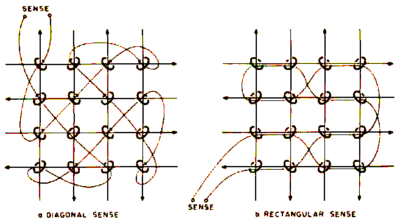
Figure 11: Noise pickup is minimized by threading the sense line through the core array in way which causes Induced voltages to cancel reach other.present, so the select current must be maintained at the higher allowed values to obtain a favorable signal to noise ratio on the sense line. This reduces current to tolerance around 5% to 10%. Depending on the type of cores used, half select currents arc in the range of 150 to 500 mA. Current
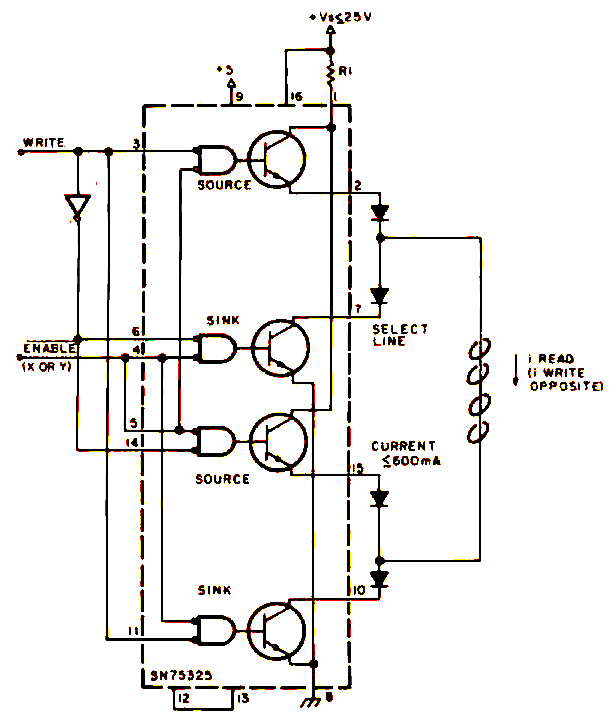
Figure 12.: Select Line Test Driver. For testing, build two of these with one used to drive an arbitrary X select line, one used to drive an arbitrary Y select line. R1 is a current limiting resistor selected us described in the text.rise time of the last select line turned on (to read) should be about half the core design time for a 1 peak (figure 4b) to occur, which ranges from 100 nanoseconds to about a microsecond for older large diameter cores. Current should last for at least twin; the peaking time to allow the core to switch completely.Getting a Memory to Work
(Starting from Scratch)
My surplus Spectra 70 stack (built by Electronic Memories, In, ) arrived with no information except that its organization was 128 x 136 words x 18 bits with four sense line groups of 64 x 68 words. Of that 1 intended to initially use a 64 x 64 word x 16 bit segment. Not being able to obtain manufacturer's data, I proceeded to discover the stack characteristics for myself. For readers similar situations. I would recommend such a course of action only if you have lots of spare time, like surprises, and have access to a 15 MHz dual trace scope.The physical dimensions of the stack were 5 by 5 by 3 inches (12.7 by 12.7 by 7.6 cm) not counting connectors. Tamper proof, auto destruct construction precluded a view of cores or windings. X and Y lines were labeled; an ohmmeter was used to associate sense and inhibit connector pins to core planes. Memory construction suggested the rectangular winding of figure 116.
Tests
Several test circuits were built to determine core switching characteristics. Figure 12 shows the select line driver circuit, two of which are required to drive an X and a Y line. The Texas Instruments Memory Core Driver integrated circuit (SN75325) is used. The external diodes simulate the steering diodes required to select more than one line, and to direct reverse voltages (generated at current turn off time by the inductive load of the select lines) to the sink transistor collector which is internally diode clamped to source voltage Vs. Vs is regulated and variable over about a 5 volts range, and R1 is chosen fur the current rang, to be tried. Figure 13 shows the inhibit driver circuit. The dual gates of the integrated circuit are connected in parallel to increase the current sinking capacity. Again the output must be diode clamped, and R2 is chosen as required. Figure 14a shows the sense amplifier with terminating resistors and means for varying the threshold voltage. The sense amplifier operates by generating an internal voltage proportional to the voltage difference appearing on the sense line wire pair. This voltage is compared with the adjustable threshold reference voltage, and a TTL high level output is generated If the threshold is exceeded. Figure 14b illustrates the outputs produced at two threshold levels for an arbitrary input signal.Timing signals used are shown in figure 15 along with resulting current directions. The logic diagram illustrates a circuit which tan be used to generate this timing. The enveloping of X ENABLE and Y ENABLE eliminates part of the half select noise in the read cycle, and ensures that the inhibit current is at maximum level when full write selection takes place. Repetition rate of the memory cycle during testing is kept under 1 kHz to prevent damage to the SN75325s. Changing the mode, WRITE, with both enable signals low ensures that a glitch will not short current through a directly connected source to sink pair.
Two select line drivers were connected to an arbitrary select line pair, and the sense amplifier was connected to a sense line thought to pass through the X Y intersection. With no signals to the select line drivers, the sense amplifier threshold voltage was advanced from zero until SENSE OUT was a steady logic 0. Starting with a low (about 150 MA) half select current, the line drivers were started, and, with the sense amplifier output monitored on the oscilloscope, the threshold voltage, was adjusted to show a series of spikes corresponding to select current edges as shown in figure 16a. As half select currents were increased equally, additional pulses emerged after spikes numbered 3 and 11, as indicated by the arrows in figure 16a. These pulses indicated core switching. Some experimenting was required to obtain proper select current balance and strength, which occurs when the switching pulses completely disappear (and not just shift) when either half select current is temporarily interrupted. Too much drive current was also indicated by a decrease in size of the switching purses with corresponding pulses appearing behind spikes number 1 and 9.
Choosing inhibit drive resistor R2 to provide half select current in the range determined necessary above, the inhibit line corresponding to the sense line used was found by driving an inhibit current through each inhibit line in turn until the switching pulses were seriously disturbed. Further adjustments of the inhibit, X, and Y currents eventually resulted in the switching pulse appearing and disappearing as the inhibit current is turned off and on. In my memory stack, about 390 to 400 mA half select current is required to cause the core to switch, producing a sense amplifier output
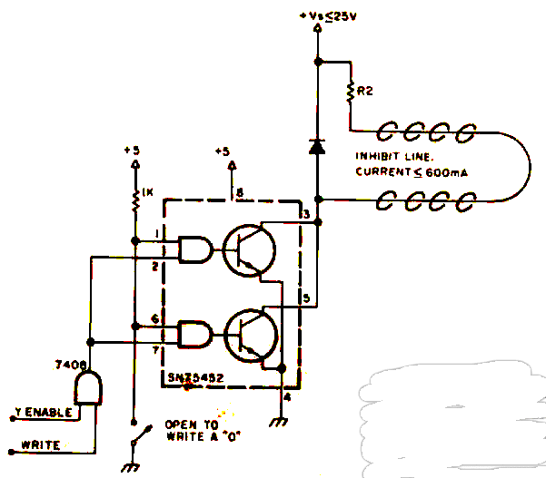
Figure 13: Inhibit Line Test Driver. For testing, one of these circuits is used to pick an inhibit line. R2 is a current limiting resistor Set as described in the text of the article.
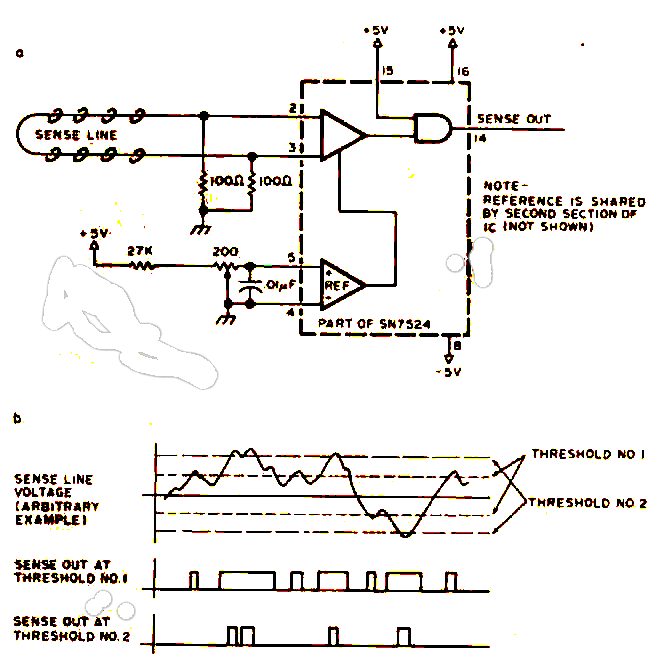
Figure 14: Sense A Amplifier, The purpose of the sense amplifier is to create an output signal which con be strobed Into a TTL larch at the appropriate moment, given the signals induced into the sense wire of the memory. For testing, the thresholds are set using the variable resistance of 200 ohms in a voltage divider from the +5 volt supply.pulse sketched in figure 16b. The smaller pulse generated for a 0 is also shown. The 1 pulse at the sense line terminals is on the order of 40 mV amplitude.An experiment verified the memory has a rectangular sense winding parallel to the Y select lines, requiring the latter to be turned on first in the read cycle. This was done by swapping the X ENABLE and Y ENABLE signals, and noting which arrangement produced the most sense noise at clock time 3 of figure 15.
Selecting the Select Lines
Success in getting the stack to respond to prodding induced me to go ahead with memory circuit construction. The SN75325s were employed in a commonly used scheme of line selection illustrated in figure 17, in which one of four X lines is chosen by four source to sink pairs, determined by a two bit
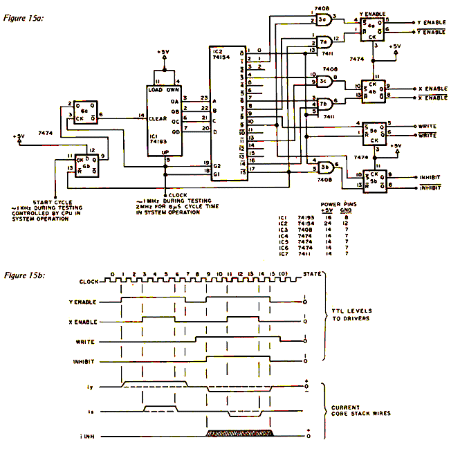
Figure 15: A suggested circuit (a) and timing wave forms (b) for driving core memories in testing and later In the final working version. The cycle time is set by the clock into pin 5 of the counter IC1. A positive transition at pin l1 of IC6 initiates a single memory cycle illustrated in (b). During testing, approximately 1 kHz will provide a good repetition rate which avoids burning up driver circuits; in final system operation, this circuit can also be used to generate the read then write cycle of core memory operation. For an 8 microsecond full cycle time, !he clock should be 2 MHz.address (low order bits 0 and 1). X READ ENABLE equals X ENABLE AND NOT WRITE; X WRITE ENABLE equals X ENABLE AND WRITE. By extension of this scheme (see the TI catalog listed in the bibliography), 16 source to sink pairs are required to select one of 64 X lines. I found that a single source resistor (R1 of figure 12) could service all source transistors used to select X service all source transistors used to select X drive lines, which eliminated the necessity of matching resistor values to provide the same current flow as different lines are selected. Two 3 to 8 decoders use six address hits to enable two source to sink pairs. The above circuitry is duplicated for the 64 Y lines, thus a 12 bit address is decoded into unique X Y intersection of the core matrix. A total of 16 SN75325 integrated circuits and 4 decoders are required, along with diode arrays. Three independently regulated and variable supply voltages were provided to allow adjustment of X, Y, and inhibit currents. Inhibit drive resistors (R2 of figure 13) must be closely matched m allow operation from a common supply voltage.
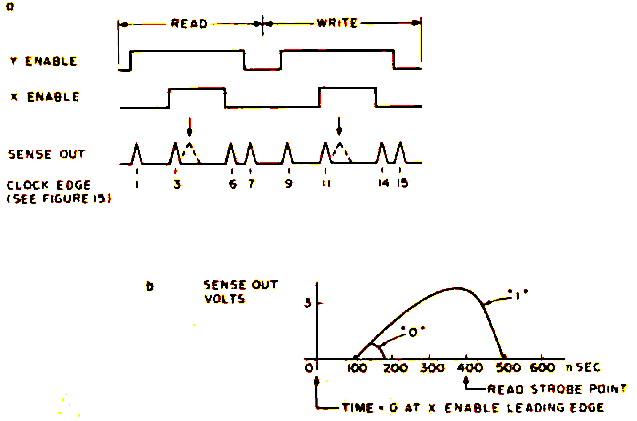
Figure 16.: Sense Amplifier Output. Spikes will be seen in the sense amplifier outputs following current changes through the cores. Detection of a "0" or "1" is obtained by observing or the "read strobe point" which follows the leading edge of the X enable pulse. This observation point is typically 400 seconds offer the leading edge of the X enable pulse which drives one of the X select lines.
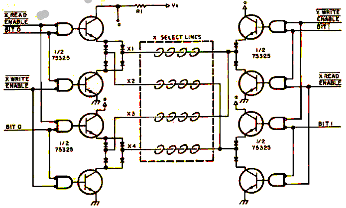
Figure 17: X Line Select Switch. This arrangement is an extension of that illustrated for testing purposes In fig- 12. For 75325 pin connections see figure 12, or page 10-21 of The Linear and Interface Circuits Data Book For Design Engineers by Texas instruments, 1973 edition.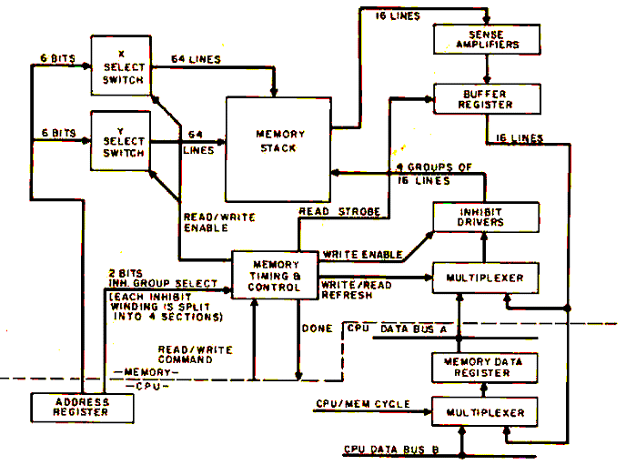Memory Operation
Figure 18 illustrates control and data flow of the memory logic. Read data is stored, by means of the Read Strobe signal, a buffer where it is used for restoring the memory word in a central processor read operation. In a central processor write operation, this read information is ignored and data from the CPU controls the inhibit drivers during memory writing. Timing is of the form of figure 15, except that the memory cycle (read then write) is accelerated to 8 microseconds in my system. Inhibit and sense circuits are similar to those of figures 13 and 14a.The arrangement of figure 18 is wasteful of central processor time, because data and address information must be held until the memory cycle is completed. Buffering data and address information in the memory logic would allow the processor to continue after Figure 18: System diagram of a memory built according to the principles described In this article. The basic memory cycle is set up by a circuit such as the one shown in figure 15 as a source of timing control. In a read cycle, data is first read, then rewritten; in a write cycle, old data is read and new data written. issuing a write command, or to wait for only half the memory cycle for data needed by a read operation.
The memory is coarsely adjusted by electronically forcing repeated manual write cycles through the processor's control panel. This allows adjustment of the halt select and inhibit currents, sense amplifier thresholds, and read strobe. The read strobe point is adjusted to occur at the point of sense amplifier output that provides best discrimination between 0 and 1 levels (see figure 16b). Short program loops can then be used to make finer adjustments.
Conclusion
Recently completed, the 4096 x 16 memory subsystem described here was built for less than $400, including stack, power supplies, and miscellaneous electronic and mechanical parts; and can be expanded to 16 K for about $200. In most of the memory, storage reliability is good; although a few blocks of addresses tend to pick up random bits. Bugs have been eliminated in a straight forward manner, most having been Paced to poorly made connections to select lines and to a bad batch of inhibit driver integrated circuits. Building a memory around a core stack is an interesting but time consuming project that can definitely result in a usable end product. As with many surplus items however, performance depends a lot on how much you can find out about the stack, and on the hardware design concessions that have to be made in the interest of financial solvency.BIBLIOGRAPHY
- "Fundamental principles or Switching Circuits and Systems", New York: American Telephone and Telegraph Company, 1961.
- "The Integrated Circuits Catalog for Design Engineers", Dallas; Texas Instruments, Inc (First Edition).
- Daly, Edmund B: "Noise Problems in Ferrite Core Coincident Currant Memories." Computes Design (November 1967), 46-50.
- Hawkins, Joseph K: "Circuit Design of Digital Computers". New York: John Wiley and Sons, 1968
- Kirkpatrick, T, and D Johnson: "Design of Meal Low-Cost Core Memories for SLT Systems." Computer Design (April 1968), 60-71.
- Smith, James E "A 650 Nanosecond 2-1/2D Memory" Computer Design October 7966), 80-87.
- Zinschlag, Howard p: "A 2-1/2D Integrated Circuit Memory" Computer Design (September 1966), 26-39.
Return to On-Line-Documents, Return to Home